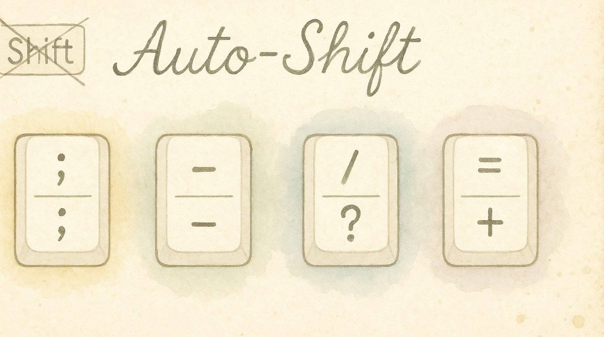
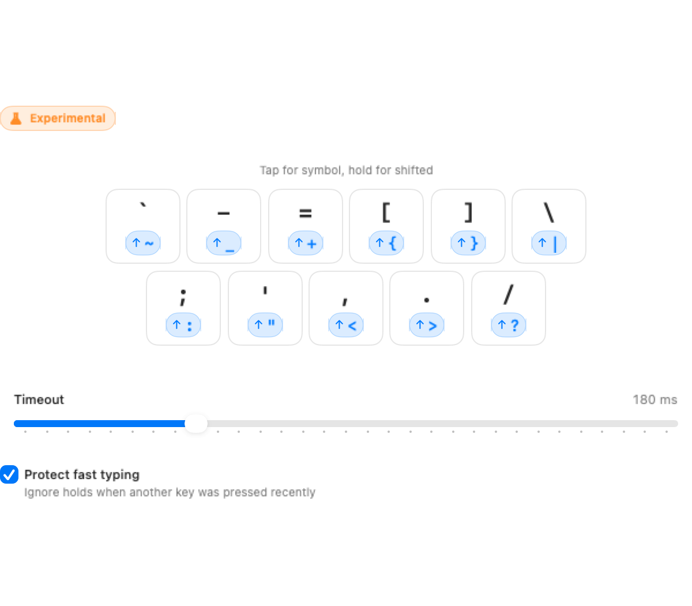

Every time you type !, @, {, or ~, your pinky reaches for Shift. That's fine once in a while, but if you write code all day — brackets, pipes, underscores, tildes — it adds up. Auto-Shift lets you hold a symbol key slightly longer to get the shifted version. Tap . for a period; hold . for >. No Shift required.
Experimental: This feature is still being refined. It works well for most users, but timing interactions with other tap-hold features (like home row mods) may need tuning.
Auto-Shift applies to symbol and punctuation keys only — not letters or numbers:
| Tap | Hold |
|---|---|
` |
~ |
- |
_ |
= |
+ |
[ |
{ |
] |
} |
\ |
| |
; |
: |
' |
" |
, |
< |
. |
> |
/ |
? |
Each key can be individually enabled or disabled. By default all 11 are active.
The configuration panel shows all 11 keys as toggleable chips — click any to disable it.

The Shift hold delay controls how long you hold before the shifted version fires:
Finding your sweet spot:
When enabled (default: ON), this prevents accidental shifts during fast typing. The Fast-typing protection window looks backward from the moment you press a symbol key. If another key was pressed within that window, Auto Shift forces the unshifted symbol instead of treating the key as a hold.
This setting is separate from Shift hold delay: one controls how long you hold, while the other decides whether a recent keystroke should suppress hold detection.
[]{}, pipes |, tildes ~, underscores _ appear constantly in codeAuto-Shift and home row mods both use tap-hold behavior. They coexist well because they apply to different keys (HRM applies to letters, Auto-Shift to symbols). Auto Shift's Fast-typing protection window applies only to Auto Shift symbol keys; it does not change the timing you configured for Home Row Mods or Home Row Layer Toggles.
If you notice interactions between the two, try:
These keys are typed quickly in prose. If the brief hold detection delay bothers you, disable just those keys and keep auto-shift on the rest.